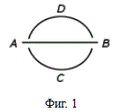

Беседа 3621 от 3877 · Беинса Дуно
Идеално търпение
Отче наш.
„Аз мога да обичам“.
Някой от вас да излезе и да напише едно изречение на дъската. Може да е на някой поет, на някой философ. Сега кое ви спира да напишете?
/Една сестра написа следното: „Буря на мрака край да тури, буря в душа да изясни“/.
Какви са мотивите ви? Защо избрахте това, а не друго? Когато войниците вдигат червеното знаме имат един повод, когато имат бялото пак имат повод. За всяко нещо има повод. Коя е подбудителната причина за да напишете това изречение. Сега често казвате, че вие обичате някого. Ако ви попитат, защо го обичате, какво ще отговорите? Ако ви попитат, защо обичате една ябълка, ще кажете, понеже е доброкачествена, сладка, затова я обичате. Когато обичате един човек, не може да го ядете, кое ви кара да го обичате? Някои неща като ги обичате вие ги изядате. Ако човек ви каже една сладка дума, тази дума вече сте я изяли, вие сте изяли вече нещо от него. Написахте „Буря на мрака край да тури“. Двама хора като се карат край да турят. Какво е било в душата на автора за да напише този стих? Защо не е писал за цветята, а е писал за бурята? Някой път след бурята става ясно. Какво се крие зад бурята в съзнанието на Пенчо Славейков, който е написал този стих? Зад думата „мрак“ какво се крие в съзнанието му, зад думата „душа“ какво се крие? В небето се натрупва много влага, дойде бурята, размахне тия пари, превръща ги и туря край на този мрак. Бурята не е фактор, тя е един резултат. Защо Пенчо турил един резултат, а не е турил същинския фактор? Пенчо не е от мирните хора. Той обича дървото. Казва, тоягата на мрака ще тури край. Защо не е казал, слънцето като изгрее ще пропъди мрака. Значи взема бурята на физическото поле, практически как може този мрак да се премахне? Като го набият хората той ще разбере. После пък бурята ще изясни. Какво се разбира под думата „буря на душата“? Показва страдание.
Сега напишете ново изречение. Това е от физическия свят, напишете друго изречение. Не бъдете скържави.
/Една сестра написа следното: „Търпението е основният стълб на любовта“/.
Как може да го докажете това? Любовта трябва ли да се доказва или да се опровергава? Че доказваш или опровергаваш е същото нещо. Само това, което доказваш може да го опровергаеш и това, което опровергаеш може да го доказваш, нищо повече. Понякой път хората стават много еднообразни. Казват: „Любов“. Каква е любовта – червена, портокалена, жълта, зелена, синя или виолетова ли е? Всичките тия дрехи ги носи. Любовта какво прави? Любовта е нетърпелива. Като влезе любовта в човека той вече е нетърпелив. Ако дойде някоя река, че те понесе то е както любовта. И любовта е като реката. Най-динамичното нещо в света е любовта. Тя като задигне нещо, носи го. Че ти се докачиш, тя не иска нищо да знае. Запример, някой човек не обича магарето, не се качва на магарето. Друг обича магарето, качва се на него. Ако го попитате, защо, казва: „Обичам магарето“. Който не обича магарето не се качва. Ще каже: „Как може да обичам магарето?“ Човек може да обича много по-долни същества от магарето. Туй дето хората казват, че трябва да се обича, трябва да се разбира. Да кажем влиза ти някаква прашинка в окото, не я обичаш. Защо не я обичаш? Смъди ти в окото искаш да я изпъдиш. Тогава какво правиш? Най-първо окото се старае да я размекчи и ако не може да го направи, образува един поток да изхвърли тази прашинка навън, да се освободи от нея.
Сега представете си, че аз не зная нищо за търпението и за пръв път слушам за търпението. Как ще ми представите търпението? Кое е противното на търпението – нетърпението. Защо е нетърпелив човек? Яздиш един кон, търпелив си да те носи конят. Яздят тебе, нетърпелив си, искаш да слязат от гърба ти по-скоро. Две различни понятия имате. Като яздиш един кон и той те тръска, ти търпиш, но то е неволя. В търпението има следното – ти даваш нещо да замине от тебе. Нетърпението е качество на слабите хора. Силният може да търпи. Защото в търпението ние разбираме да се въздържаш от нещо. Но има друга една страна – обичаш някого, той не те обича и ти търпиш, чакаш един ден да те обикне. Може ли да докажеш, след като обикнеш някого, след колко време той ще те обикне. Като влезеш в една гостилница, дадат ти първото ядене, нахраниш се. След колко време трябва да платиш? Като влезеш ти казват добре дошъл, но като речеш да излизаш, казват: „Плати“. Колко време взема след като влезеш в гостилницата и изядеш яденето, докато платиш? След половин час трябва да платиш. Та казвам: В любовта ти си гостилничар, даваш храната даром. Началото даром даваш, като влиза даваш най-хубавото ядене, като излизат клиентите, казва им: „Без пари не може. Навън да излезете трябва да платите“. Ако влезете в една гостилница, кое ядене най-първо ще ядете? Като влезете в гостилницата има няколко яденета сготвени, кое ще изберете най-първо? Да допуснем, че има боб, леща, грах, бамя, доматена супа, пюре от картофи, кое ще изберете? Да допуснем, че има грозде, сливи, круши, ябълки, кое ще изберете? Някой път избирате едно ядене, защо? – Защото нямате повече пари. Скромни сте, само едно ядене избирате. Тази скромност има съображения. Някой път имаш повече пари вземаш две яденета. А като разполагаш с много пари и четири, и пет яденета вземаш. Някой казва, че е скромен в яденето. Не че той е скромен, но причините са други. Някой казва, че е търпелив. Слабите хора са търпеливи, казват: „В света трябва да се търпи.“ Но когато са силни другояче мислят. Слабите по един начин говорят, силните по друг начин говорят. Слабите говорят, че спасението е в бурята. Интересно е, че хората, които отричат реалността, отричат работи, които не виждат, говорят за тях. Говорят за едно верую, като за един резултат. На какво е резултат то? Допущате, че от несъзнателното се ражда съзнателното. Удариш се в един камък, започваш да мислиш защо си се ударил. Когато ти се удари в камъка внесе ли тази мисъл, камъкът участвува ли в този удар. Той си мълчи. Представете си, че вие сте рибар и имате въдица, имате едно железце, турено на него едно червейче, вие държите конеца. Една риба хване въдицата, глътне я, размърда се този конец. Конецът няма съзнание, въдицата няма съзнание, вие държите въдицата с конеца или като усетите, че се мърда конеца изваждате рибата навън. Значи, зад несъзнателния процес седи един съзнателен процес. Несъзнателните процеси са свързани със съзнателните процеси.
Другият куплет, който написал Пенчо Славейков какъв е? При какви условея сте го чели? Като го четохте какво чувствувахте? Като сте го запомнили вие сте го обикнали. Нека друг да напише още едно изречение.
/Един брат написа: „Душата е слънчев лъч“/. Как ще го докажете? Много отвлечени работи са.

Какво нещо е търпението? Някой ще каже, че не го познава. Ти не го познаваш пък то те учи. Търпението е положително и отрицателно. Имаш едно желание и ти се учиш на търпение. Не се постига и да се въздържаш, чакаш. Да кажем, че обичаш някого, чакаш той да прояви любовта си. Направил си една погрешка, пак търпиш. Какво очакваш? Ти не чакаш да те обичат, но чакаш да ти простят и пак търпиш. Като обикнеш някого колко време ще мине докато те обикне? Като направиш една погрешка колко време ще мине докато ти простят? Да представим идеята по-точно: Една торба с пясък и една торба със злато имате. Коя торба ще се изпразни по-бързо, с пясъка ли или със златото? Хората знаят, че едната е пълна с пясък, а другата със злато. Защо мислите, че ще се изпразни тази със златото? Научно можете ли да го докажете? Учители сте, предметно учение имате, един метод имате. Вие първо турихте буря, после търпение и после, че душата е слънчев лъч. Представете си, че имате пресен хляб, който е изваден сега, мекичък е и имате друг хляб от 5–6 дена закоравял. С кой хляб ще се разправите най-първо, с мекия или с коравия? Вие казвате, че човек трябва да бъде корав, не трябва да бъде мек. С коравите хора ли се занимавате повече или с меките? Ако имате два пътя – единият стръмен, покрит с бодили, не е равен, а другият равен път, мек – по кой път ще минете? Значи пътят на малките препятствия всякога се избира повече.
Сега тази буря от Пенчо Славейков как се образувала? Представете си, че Пенчо Славейков е млад момък, залибил е една мома красива, на един български чорбаджия, който не иска да даде дъщеря си на този момък. Момъкът я задява, пише ѝ писма. Бащата пък, ако го срещне хука го, не го разбира, казва: „Моята дъщеря не е за тебе“. Или представете си, че Пенчо Славейков има да дава някому един дълг. Срещне го кредитора, казва: „Ти обеща, че ще платиш тази полица, кога ще я изплатиш?“ Тази буря в Пенчо Славейков бушува. Или представете си, че Пенчо Славейков е говорил едно слово в църквата, но казал нещо и произлязла цяла една буря. Бурята, Пенчо Славейков я образува. Той залюбил момата, казва: „Кога ще свърши бурята“. Той е образувал бурята. Пенчо от едната страна и момата от другата. Кой образува бурята? Бащата кряска, майката вика. Мракът е някъде в пространството. Мракът показва, че Пенчо Славейков не е заел някаква служба, няма пари затуй бащата на момата не я дава. Казва: „Какво ще се жениш, ти ще ѝ причиниш всичките страдания“. Или имате търпението. Пенчо Славейков е залюбил, той е учил, но не е свършил. Бащата казва: „Чакай да свършиш училището, пари трябват да се поддържаш“. Търпение трябва да има момъкът.
Когато ядете по свобода ли ядете или сте заставени да ядете? Яденето по свобода ли става или има известно насилие? Гладът ни кара да ядем често. Когато вие се срещате вие трябва да правите вътрешен разбор. Някой път вие сте недоволен. Защо се явява недоволството в човека? Между двама учители кога ще се яви недоволството? Когато при един учител се яви друг, който е по-способен от първия, в първият учител ще се яви недоволство. Ако вторият е по-неспособен от него ще му бъде приятно. Като дойде по-способен, той е недоволен. Ако дойде някой, който не е така способен, той ще бъде доволен. Та казвам: Когато дойде сиромашията, вие сте недоволен от нея. Сега аз изваждам друго заключение: Сиромашията знае повече от вас, затуй сте недоволни от нея. Богатството седи по-ниско от вас и вие сте доволени от него. Сиромашията е много учена, а богатството е невежо. В дадения случай правя тази аналогия на нещата. Вие не сте мислили върху тия работи, много прости работи са. Богатството мяза на една мома, която не е красива, но си е турила джунджурии, панделки, шапка и т. н. Онази, красивата ходи със съдрани дрехи, но има съзнание в себе си, че е красива. Туй е сиромашия. Много горделива е. Със съдрани обуща ходи не ѝ мигва окото. Богатството много мига, навсякъде мига. Какво лошо има в мигането? Мигането ни учи да чистим прозорците си, да може да виждаме ясно. На някой твой приятел прозорците не са чисти, образувала се е пара на прозореца, мига човека за да очисти прозорците. Очаква нещо. Когато човек мига много често, очаква някой отвън, затуй чисти. Горният клепач и долният клепач, понеже са влюбени, като се уморят приближават се, събират се, целуват се и пак се разделят. Много често се целуват. Горният клепач целуне долния и понеже ги е страх от човека, пак застанат далече – единият горе, другият долу. Като се загледа човек те се целуват пак и веднага се разделят. Вижте морала на устата какъв е. Устните и те са се обикнали. Те като се затворят, допират се, държат се под ръка. Очите са отворени, а на устните трябва да им дадеш нещо за да се отворят. Като им се даде едно ядене те се откъсват. Много са се залибили.
Че вие така можете да представяте на децата света. Това е една лекция за детето. Предметно учение, че устните са се либили, любов имат. А пък любовта на очите е скрита. Тогава децата ще ви дадат възражение: „Когато легнем да спим очите са затворени“. Как ще обясните това? Ние някои неща считаме естествени. Всичко е естествено, целесъобразно, само че ние не знаем и постоянно на тази целесъобразност даваме излишни тълкувания. Значи, горният клепач дава положителна енергия на окото, а долния отрицателна – образува се едно течение. Долният клепач и горният образуват едно течение и държат окото в здравословно състояние. Ако престане да обича горният крепач окото и ако долният клепач престане да обича окото, то заболява. Трябва да поддържаш любовта на горния клепач и на долния – за да бъде окото здраво. Трябва да държиш устните си не притиснати, но свободно допрени. Ако много се стиска устата не е естествено положение. Ако е отворена, устата пак не е в здравословно състояние. Ако се приближи малко то е естествено положение, допират се устните. Между горната и долната бърна се образува едно течение, което е здравословно. От голямото стискане някой път са се слепили горните и долните бърни и се образувала една права линия. Сега когато вие си допирате с ръка главата, на долната челюст, има ли нужда от подпора? Защо правите това? В даденият случай в долната челюст се набира известна енергия, която те безпокои. За да се премахне туй безпокойство ти туряш ръката си и тази енергия протича през пръстите. Или боли те лицето, туряш ръката на болното място. Или топло ти е някъде, туряш ръката си и отнемаш от топлината. Всякога, когато туряш ръката на лицето, ти я туряш да придадеш нещо или да отнемеш нещо. Като изстине една част от тялото ти, ти туряш ръката си, да го стоплиш.
Дайте ми образа на едно идеално търпение. Да кажем отидете при някой извор със стомна. Заредят се 10–20 души, вие им отстъпвате оставате последен. Държите стомната и спокойно чакате. Като си отидат всички, приближавате се до извора и напълвате стомната. Приблизително това е идеалното търпение да чакате да напълните стомната. Щом пръв искаш да си напълниш стомната ти си нетърпелив, пестиш времето, нетърпелив си. Да допуснем, някой път искаш да се учиш на търпение. Туряш на главата си една стара шапка, не обичаш стари шапки, но за търпение я туряш да се разходиш с нея. Питаш: „Защо е тази стара шапка?“ Сега вие ходите гологлави. Коя е подбудителната причина? Подбудителната причина е в това, че като носиш шапка по-малко енергия и светлина приемаш. Сега хората ходят гологлави за да приемат повече светлина, за да мислят по-добре. Казват: „С тия шапки оглупяхме“. Хората сега хвърлят шапките за да поумнеят. Нали като влезеш в църквата трябва да снемеш шапката. То е да разбираме по-добре. Сега според вас колко трябва да бъде дебела шапката? Българите са се осакатили с тия дебели калпаци, които носят. Българинът като пие снема калпака, а след като се напие тури калпака, накриви го на едната или другата страна. Мене ме интересува защо някой път кривите на дясната страна шапката, а друг път на лявата? Някой път рисувате едно лице, не рисувате цялото лице, но рисувате едната страна, дясната или лявата. Какви са съображенията да рисувате отляво или отдясно. Някой път гледате човека и искате да го гледате от лявата страна. Друг път искате да гледате лицето от дясната страна. Всякога вие обичате противното на вас. Ако вашите очи са много отворени вие обичате човек с елипсовидни очи.
Казвам: Както сега вие гледате то не се дължи на вас, то се държи на дядо ви и прадядо ви, които образували тия гледци. Както вие държите устата си то не сте вие, то са вашите прадеди, които са научили това. Трябва тепърва да учите как да държите очите си, как да държите устата си, как да държите ръцете си. Отсега нататък хората трябва да се учат.
Някой път учителят удари ученика с външната част на ръката си. То е конщина. Понеже задните крака на коня са предните ръце у човека, като бутнеш коня той ритне – у някои хора е останал този навик да удрят с външната страна на ръката си. То е конско начало. Мисли, че някакъв враг има някъде. Като удари човек с вътрешната страна на ръката какво е то? То е котещина, то е навик останал от котките. Котката сграбчва с вътрешните части на краката си. Като удря човек така, то е по нейния навик. Сега по човешки какво трябва да правиш? Защо да не дойдеш да погалиш по лицето. Една учителка по-добре милва момчетата, учителят по-лесно милва момичетата, защо? Защото учителката има повече материал за момчетата, отколкото за момичетата и учителят има повече материал за момичетата, отколкото за момчетата. Мъжът носи платове за жените, а учителката носи – за мъжете. Тия ученички, които гали учителката те вървят по мъжка линия. Има момчета, които вървят по женска линия. Учителят гали тия момчета. Има и изключения.
Този образ ще го развиете. Вие развийте педагогически тази лекция.
Никога не задържайте излишно нещо в себе си.
Само светлият път на Мъдростта, води към Истината!
В Истината е скрит животът!
ХХI година.
38 лекция на Младежкия окултен клас,
държана от Учителя на 4. IХ. 1942 г., петък, 5 ч. сутринта.
София – Изгрев.
Бележка (на координатора):
На 11. IХ., 18. IХ. 1942 г. по каталога на Елена Андреева няма лекции.